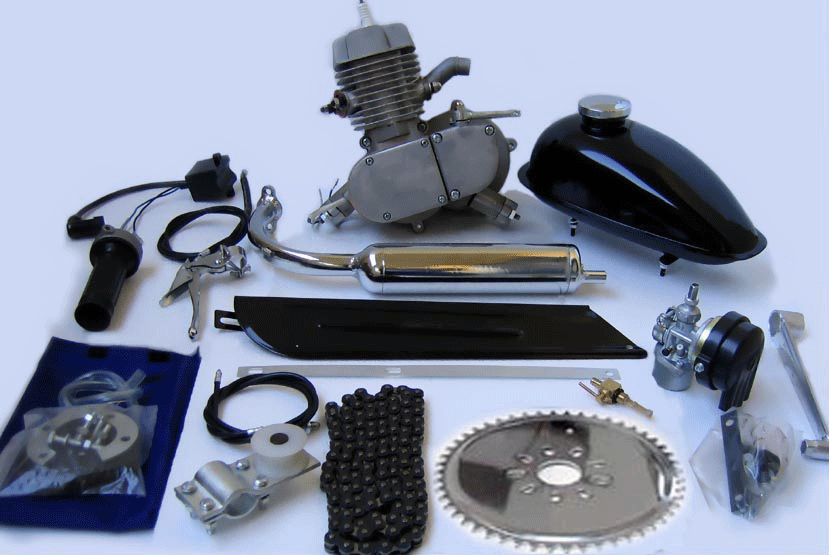

-
This 80cc bicycle motors are 2 cycle 3.5 h.p.
- This bicycle engine kit comes with every thing you
need to convert your regular 26" single speed cruiser
or a multi speed mountain bike into a motorized bike.
- Operates like a moped.
- You can pedal the bike or start
the engine by releasing the clutch lever on the bicycle motor .
- No rope pulling needed for this motorized bicycle.
- This bicycle motor gets around 150 miles on a gallon of gas.
- You can stop or start the engine as you ride.
- These bicycle motors have a twist grip hand throttle controls speeds to 40 mph.
- Depending on the gear ratio.
Comes with a 44 tooth Chrome racing Sprocket,
with 9 hole mounting to rear wheel & Installation hardware.
- Requires basic mechanics and simple tools.
- The 26" cruiser coaster brake type bikes as sold in stores
all over USA can be used to make a motorized bicycle.
- It takes about a few hours to install.
- Uses synthetic motorcycle oil.
- The gas oil mixture is 20 to 1 break in period; After break in it is 32 to 1.